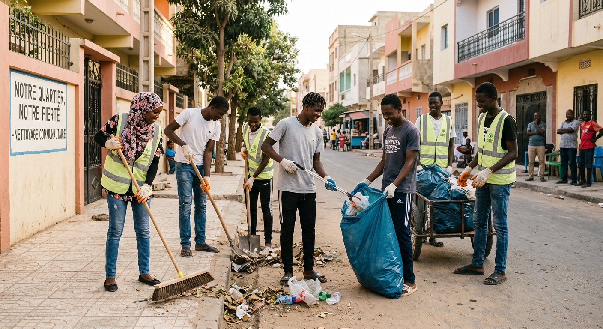

And Défar - La jeunesse qui agit pour Dakar
Nettoyage,soutient scolaire,formation
numérique. Rejoins le mouvement

Nettoyage,soutient scolaire,formation
numérique. Rejoins le mouvement
Journées de nettoyage communautaires
dans les quartiers de Dakar.
Mobilisation citoyenne.
matériel fourni,
ambiance convival
Ateliers d'aide aux devoirs, préparation
BFEM & BAC
Formation initiation au code,
bureautique, sécurité numérique ,
marketing digitale et
entreprenariat numérique.
Pour jeunes de 15 ans-25 ans.
Ordinateurs fournis.
Nous sommes une communauté de jeunes motivés et motivant la jeunesse à travailler en équipe.
Notre mission est d'aider les jeunes scolarisés, entrepreneurs,et même non
scolarisés
à se former dans les métiers du numérique, à maitriser les bases du digitale ...
Aussi nous organisons des séances de renforcement gratuites les week-ends et nous aidons les candidats
à préparer leurs examens .
A cela s'ajoute les set-setal qu'on organise tous les samedis
pour rendre notre quartier propre et de permettre
aux habitants de mieux se connaitre et de se familiariser.
Si vous habitez à Dakar et que vous voulez devenir membre de AND DEFAR
Veillez remplir ces informations →
Formulaire
Si vous voulez visionner quelques uns des images que l'on a pris lors de nos
activités voici notre galerie d'images
Galerie